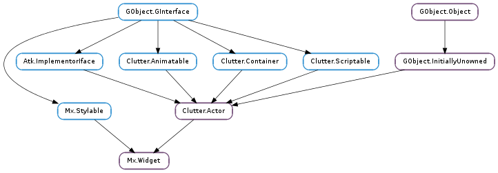

| Subclasses: | Mx.Bin, Mx.BoxLayout, Mx.ComboBox, Mx.DeformTexture, Mx.Entry, Mx.FloatingWidget, Mx.Grid, Mx.Icon, Mx.Image, Mx.Label, Mx.Notebook, Mx.PathBar, Mx.ProgressBar, Mx.Slider, Mx.Spinner, Mx.Stack, Mx.Table, Mx.Toggle |
|---|
| apply_style(style) | |
| get_available_area(allocation, area) | |
| get_background_image() | |
| get_border_image() | |
| get_disabled() | |
| get_menu() | |
| get_padding(padding) | |
| get_tooltip_delay() | |
| get_tooltip_text() | |
| hide_tooltip() | |
| long_press_cancel() | |
| long_press_query(event) | |
| paint_background() | |
| set_disabled(disabled) | |
| set_menu(menu) | |
| set_tooltip_delay(delay) | |
| set_tooltip_text(text) | |
| show_tooltip() |
| Name | Type | Flags | Description |
|---|---|---|---|
| disabled | bool | r/w | Whether disabled styling should be applied and the widget made unreactive. |
| Mx.Menu | r/w | The Mx.Menu associated with the widget | |
| tooltip-delay | int | r/w | Delay time before showing the tooltip |
| tooltip-text | str | r/w | Text displayed on the tooltip |
| Name | Parameters | Return | Description |
|---|---|---|---|
| long-press | float, float, Mx.LongPressAction | bool | Emitted when the user holds a mouse button down for a longer period. |
| Name | Type | Access |
|---|---|---|
| parent_instance | Clutter.Actor | r |
Bases: Clutter.Actor, Clutter.Container, Mx.Stylable
Base class for stylable actors. The contents of the Mx.Widget structure are private and should only be accessed through the public API.
| Parameters: | style (Mx.Style) – A Mx.Style |
|---|
Used to implement how a new style instance should be applied in the widget. For instance, setting style instance on stylable internal children.
| Parameters: |
|
|---|
Copies allocation into area and accounts for the padding values. This gives the area that is available in which to allocate children with respect to padding.
| Returns: | a Clutter.Actor |
|---|---|
| Return type: | Clutter.Actor |
Get the texture used as the background image. This is set using the “background-image” CSS property. This function should normally only be used by subclasses.
| Returns: | Clutter.Actor |
|---|---|
| Return type: | Clutter.Actor |
Get the texture used as the border image. This is set using the “border-image” CSS property. This function should normally only be used by subclasses.
| Returns: | The current object in the “menu” property. |
|---|---|
| Return type: | Mx.Menu |
| Parameters: | padding (Mx.Padding) – A pointer to an Mx.Padding to fill |
|---|
Gets the padding of the widget, set using the “padding” CSS property. This function should normally only be used by subclasses.
| Returns: | the current delay value in milliseconds |
|---|---|
| Return type: | int |
Get the value of the “tooltip-delay” property.
| Returns: | The current tooltip string, owned by the Mx.Widget |
|---|---|
| Return type: | str |
Get the current tooltip string
Hide the tooltip for widget
Cancel a long-press timeout if one is running and emit the signal to notify that the long-press has been cancelled.
| Parameters: | event (Clutter.ButtonEvent) – the event used to determine whether to run a long-press |
|---|
Emit the long-press query signal and start a long-press timeout if required.
Invokes Mx.Widget ::paint-background () using the default background image and/or color from the widget style
This function should be used by subclasses of Mx.Widget that override the paint() virtual function and cannot chain up
| Parameters: | disabled (bool) – value to set |
|---|
Set the disabled property. Disabled widgets have a “disabled” pseudo-class until disabled is set to False.
| Parameters: | delay (int) – |
|---|
Set the value, in milliseconds, of the “tooltip-delay” property. This is initially set to MX_WIDGET_TOOLTIP_TIMEOUT.
| Parameters: | text (str) – text to set as the tooltip |
|---|
Set the tooltip text of the widget. Note that setting tooltip text will cause the widget to be set reactive. If you no longer need tooltips and you do not need the widget to be reactive, you must set Clutter.Actor ::reactive to False.
Show the tooltip for widget